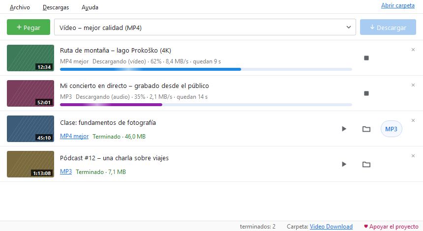

Vídeo y audio en tu PC.
Con un clic.
Una aplicación gratuita para Windows: MP4 en calidad completa o MP3, directamente desde el navegador o desde un enlace copiado.
Instalación: Windows puede mostrar un aviso. El instalador aún no tiene firma digital, así que Windows puede mostrar «Windows protegió su PC». Comprueba que el archivo viene de este sitio y pulsa Más información y luego Ejecutar de todas formas. Las actualizaciones desde la propia aplicación no muestran este aviso.
Beta Novedad: Video Download para Mac. Para Mac con chip de Apple (M1 o posterior) y macOS 12 o posterior. Funciona, pero aún lo han probado pocas personas: avísanos si algo no funciona.
La versión para Mac aún no está firmada por Apple, así que el primer inicio requiere unos clics más:
- Abre el .dmg descargado y arrastra Video Download a Aplicaciones.
- Abre la app. macOS dice que no puede verificarla: cierra el aviso (no «Trasladar a la papelera»).
- Ve a Ajustes del Sistema → Privacidad y seguridad, desplázate hacia abajo, pulsa Abrir igualmente e introduce la contraseña del Mac.
- Vuelve a abrir la app y confirma Abrir. Solo hace falta una vez.
La aplicación está pensada para tus propios vídeos, contenido para el que tienes permiso del autor y contenido con licencia libre. Al descargar aceptas las Condiciones de uso. El contenido protegido con DRM no se descarga.

Todo lo que necesitas, nada que sobre
Una ventana sencilla y, por debajo, todo lo que esperas de un buen descargador.
MP4 hasta la mejor calidad
La mejor, 1080p, 720p o 480p. Imagen y sonido se unen en un MP4 que se reproduce en todas partes.
Solo audio: MP3 o M4A
Para clases, pódcasts y música. Un MP4 terminado se convierte en MP3 con un botón.
Extensión para el navegador
Un botón «Descargar el vídeo en reproducción» y clic derecho en cualquier enlace o vídeo en Firefox, Edge y Chrome. Cómo instalarla
Copia un enlace y listo
La aplicación detecta un enlace copiado y lo añade a la cola. También puedes arrastrar un enlace a la ventana.
Cola, listas, varias a la vez
Listas de reproducción completas, hasta 4 descargas a la vez y reintento automático si se corta la conexión.
Fragmentos, subtítulos, portada
Solo una parte del vídeo, de–a, subtítulos incrustados en el MP4 y la miniatura como portada del archivo.
Tema claro y oscuro
O igual que Windows. El progreso también se ve en el botón de la barra de tareas y al final llega un aviso.
Siempre al día
La aplicación busca nuevas versiones por sí sola y actualiza la parte que lee los sitios web, sin reinstalar.
Cómo funciona
De la instalación a tu primer archivo en menos de un minuto.
Instalar
Ejecuta el instalador. No necesita administrador y no añade nada más a tu PC.
Añadir un enlace
Copia un enlace, pulsa «Pegar» o descarga directamente desde el navegador con la extensión.
Elegir y descargar
MP4 o MP3 y luego «Descargar». El archivo te espera en la carpeta Video Download.
Novedades
La misma lista que en la aplicación (Ayuda → Novedades).
0.9.6 26.9.2026
- Las actualizaciones están firmadas digitalmente: el programa solo instala una versión nueva firmada por nosotros, aunque alguien cambie el archivo donde se publica.
- En el primer inicio, un breve aviso de que el programa vigila los enlaces copiados, con un botón para desactivarlo en el acto.
- Los archivos temporales de cookies que quedan (tras un cierre repentino) se borran en el siguiente inicio; las listas largas usan menos memoria.
- La conexión con el complemento del navegador resiste mejor las peticiones lentas o bloqueadas.
0.9.5 26.9.2026
- 1080p, 720p y 480p llevan una marca en el nombre del archivo, así que otra calidad del mismo vídeo ya no es «ya descargado».
- Dos vídeos con el mismo título (nombre sin ID) ya no se mezclan; el mismo vídeo iniciado dos veces a la vez espera al primero.
- «Terminado» solo cuando el archivo existe y se puede leer; la conversión a MP3 siempre se puede detener.
- Cerrar el programa ya no congela la ventana; la actualización también espera a las conversiones a MP3.
0.9.4 26.9.2026
- Estabilidad: el mismo enlace se puede volver a añadir justo después de «Detener».
- Actualizar el lector de sitios (yt-dlp) ya no borra la versión en uso; si la nueva no funciona, el programa vuelve a la anterior.
- Un historial o una cola dañados ya no bloquean el programa; si no se puede guardar, el programa lo avisa.
- La desinstalación también quita la conexión con Firefox; el límite de velocidad se reparte solo entre las descargas que realmente están en curso.
La aplicación es gratuita
Sin anuncios, sin rastreo y sin versión «premium». Si te resulta útil, puedes apoyar su desarrollo de forma voluntaria. Una contribución no desbloquea nada: la aplicación es igual para todos.
♥ Apoyar con PayPal Escanéalo con la cámara del móvil
Escanéalo con la cámara del móvilAyuda
Las preguntas más frecuentes. Si algo no funciona: en la aplicación usa Ayuda → Guardar un informe del problema y luego informa del problema adjuntándolo. Los informes son públicos: no incluyas contraseñas ni datos personales.
Windows dice «Windows protegió su PC». ¿Y ahora?
La aplicación aún no tiene una firma digital de pago. Pulsa «Más información» → «Ejecutar de todas formas». La suma SHA-256 del instalador aparece con cada versión en GitHub.
De repente un vídeo no se descarga.
Los sitios web cambian a menudo. Ayuda → Actualizar el lector de sitios (yt-dlp) y vuelve a intentarlo.
¿Por qué no se descargan las emisiones en directo?
Una emisión en directo no tiene fin, así que la descarga nunca terminaría. Descárgala cuando acabe y se publique la grabación.
¿Qué envía la aplicación a internet?
Solo lo necesario: el enlace que descargas va a ese sitio web y la búsqueda de actualizaciones, a GitHub y PyPI. Sin cuentas, estadísticas ni rastreo.